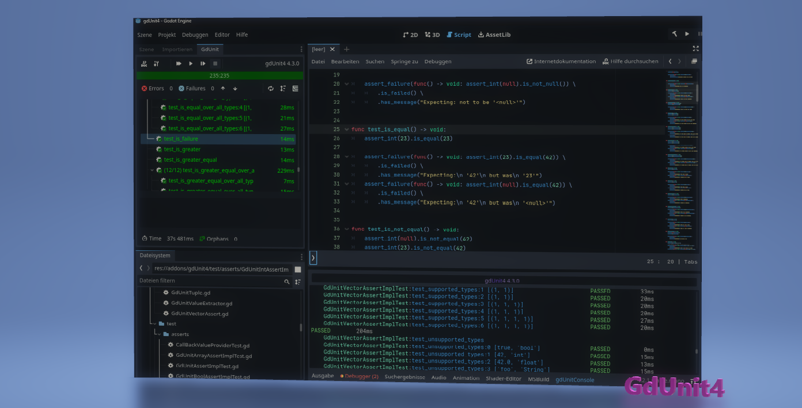

GdUnit4 v6.0.x

 build on (v4.5.stable.mono.official [876b29033])
What is GdUnit4?
Gd(Godot)Unit(Unit Testing)4(Godot 4.x)
GdUnit4 is an embedded unit testing framework designed for testing Gd scripts, C# scripts, and scenes in the Godot editor. With GdUnit4, you can easily create and run unit tests to verify the functionality and performance of your code, ensuring that it meets your requirements and specifications.
GdUnit4 is a powerful tool that supports Test-Driven Development (TDD), a popular software development approach that emphasizes creating automated tests before writing any code. By using GdUnit4 for TDD, you can ensure that your code is thoroughly tested and free of bugs, which can save you time and effort in the long run.
Features
Core Testing Features
- Support for GDScript and C#
Write and execute tests in both GDScript and C# - Embedded Test Inspector
Navigate your test suites directly within the Godot editor - Test Discovery
Automatically searches for tests at runtime and adds them to the inspector - Convenient Interface
Run test-suites directly from Godot using the context menu (FileSystem panel, ScriptEditor, or GdUnit Inspector) - Create Tests from Editor
Right-click on any function in the ScriptEditor and select “Create TestCase” to generate tests automatically
Test Writing & Assertions
- Fluent Syntax
Write test cases with an easy-to-read, fluent interface - Wide Range of Assertions
Comprehensive assertion methods for verifying behavior and output - Argument Matchers
Verify function calls with expected arguments - Unicode Text Support
Full support for unicode characters in test strings and assertions - Variadic Arguments Support
Test functions that accept variable numbers of arguments
Advanced Testing Capabilities
- Test Fuzzing
Generate random inputs to test edge cases and boundary conditions - Parameterized Tests
Test functions with multiple sets of inputs and expected outputs - Test Session Hooks
Set up and tear down test resources at the session level for efficient test management - Mocking & Spying
- Mock classes to simulate behavior and define output for specific functions
- Spy on functions to verify they were called with expected parameters
- Mock or spy on scenes to simulate behavior and verify function calls
- Scene Runner
Simulate different kinds of inputs and actions:- Mouse clicks and movements
- Keyboard inputs
- Touch screen interactions
- Custom input actions
- Wait for specific signals or function return values
- Flaky Test Handling
Detect and handle flaky tests by rerunning failed tests
Configure retry count and mark non-deterministic failures in test results - Configurable Templates
Customize templates for generating new test-suites
Continuous Integration Support
- Command Line Tool
Run tests outside the Godot editor for CI/CD pipelines - HTML Report Generation
Generate comprehensive HTML test reports - JUnit XML Report
Export test results in JUnit XML format for CI integration - GitHub Action Integration
Public marketplace action for integrating GdUnit4 into your CI workflow
gdunit4-action
GdUnit4Net - C# Support
- C# API - gdUnit4.api
Full support for writing tests in C# - VSTest Integration - gdunit4.test.adapter
Run and debug tests in:- Visual Studio
- Visual Studio Code
- JetBrains Rider
You are welcome to
- Give Feedback on the gdUnit GitHub Discussions page.
- Suggest Improvements by creating a new feature request issue on the gdUnit GitHub Issues page.
- Report Bugs by creating a new bug report issue on the gdUnit GitHub Issues page.